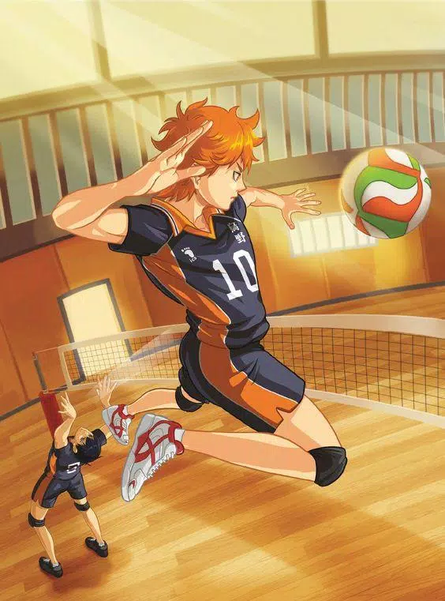

MY FAVOURITE
HAIKYUU
Junior high school student, Shoyo Hinata, becomes obsessed with volleyball after catching a glimpse of Karasuno High School playing in the Nationals on TV. Of short stature himself, Hinata is inspired by a player the commentators nickname 'The Little Giant', Karasuno's short but talented wing spiker. Though inexperienced, Hinata is athletic and has an impressive vertical jump. He joins his school's volleyball club – only to find he is its sole member, forcing him to spend the next two years trying to convince other students to help him practice.